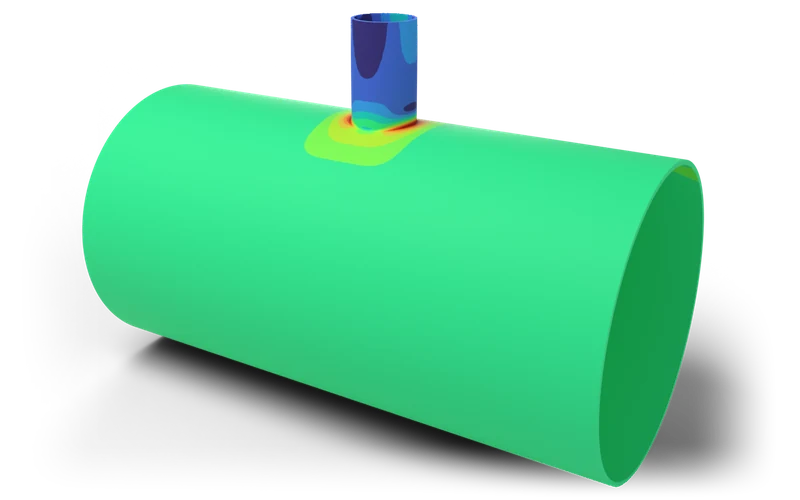
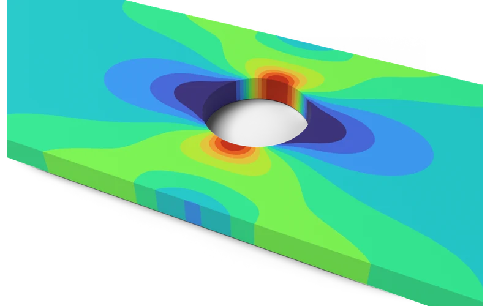
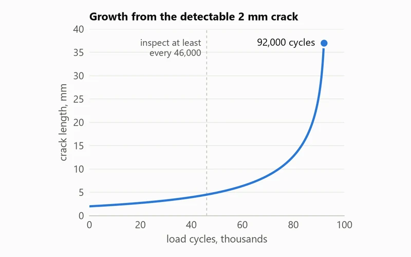
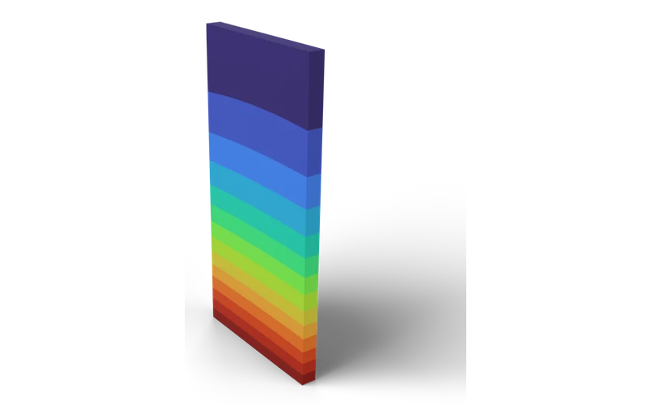
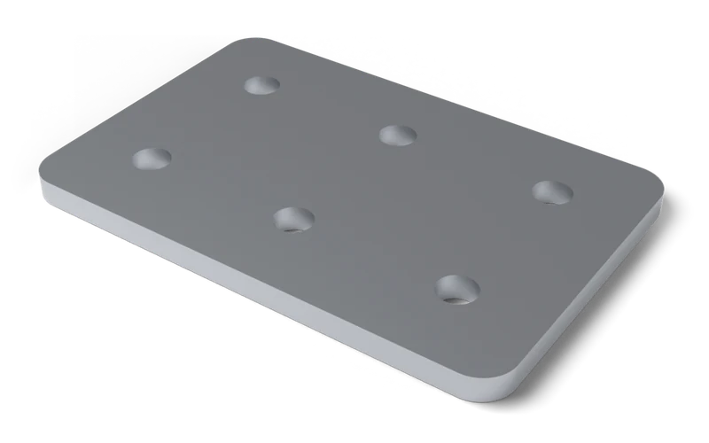

Mechanical engineering · simulation portfolio
Simulation, Proof Attached.
A bolted joint that slips 4 % too early. A pressure vessel nozzle that passes its design code or fails it by 24 %, depending on where one line is drawn. A bracket made lighter by an AI agent that tried 78 designs. Twenty-five studies, each one checked against an independent answer.
- studies
- 25
- automated checks
- 5,053
- saved runs
- 157
- paid licences
- 0
Same surface and colour bands as the render · Drag to turn · scroll or pinch to zoom · double-click to reset

The work
Twenty-Five Studies
Each card opens a study on its own page: the result, how the model is built, how I checked it and what the checks caught. Most of the problems are made up, so there's no client data; the traction motor and the pipe flow are checked against published measurements. Every number comes from a saved run that can be repeated from its recorded inputs with one command.
 Bracket Optimisation Loop, Driven by the Agent
PassesCadQuery · Gmsh · CalculiX · SciPy
Bracket Optimisation Loop, Driven by the Agent
PassesCadQuery · Gmsh · CalculiX · SciPy

Pressure Vessel Nozzle, Design Code Check Depends on one judgement callCadQuery · Gmsh · CalculiX Bolted Joint, Slip and Opening
FailsCalculiX
Bolted Joint, Slip and Opening
FailsCalculiX

Aluminium Strap: Cable Hole, Fatigue Life and Proof Test PassesCadQuery · Gmsh · CalculiX · Python Strut Buckling, With an Imperfect Strut
PassesCalculiX
Strut Buckling, With an Imperfect Strut
PassesCalculiX
 Roller-on-Plate Contact, Nonlinear FEA
PassesGmsh · CalculiX
Roller-on-Plate Contact, Nonlinear FEA
PassesGmsh · CalculiX
 Cantilever Bracket: Stress Check, Then Optimised
PassesCalculiX · SciPy
Cantilever Bracket: Stress Check, Then Optimised
PassesCalculiX · SciPy
 Bracket Arm: Modal Analysis, Random Vibration and How Robust the Pass Is
PassesCadQuery · Gmsh · CalculiX · Python
Bracket Arm: Modal Analysis, Random Vibration and How Robust the Pass Is
PassesCadQuery · Gmsh · CalculiX · Python
 Fan Rotor: Critical Speeds and Unbalance Response
Fails as drawn; fix foundROSS · Python
Fan Rotor: Critical Speeds and Unbalance Response
Fails as drawn; fix foundROSS · Python

Cracked Steel Plate: Critical Crack and Fatigue Crack Growth PassesGmsh · CalculiX · Python Cold Plate: The Coolant Channel, Then the Full Thermal Chain
PassesOpenFOAM · CalculiX
Cold Plate: The Coolant Channel, Then the Full Thermal Chain
PassesOpenFOAM · CalculiX
 Turbulent Flow: Pipe Friction, Then Flow Over a Step
Passes, with one missOpenFOAM
Turbulent Flow: Pipe Friction, Then Flow Over a Step
Passes, with one missOpenFOAM
 Coolant Channel Pressure Budget
FailsOpenFOAM
Coolant Channel Pressure Budget
FailsOpenFOAM

Heat-Sink Fin Temperature PassesCalculiX Traction Motor, Modelled From Client Data and Checked Against Test
In progressPyleecan · FEMM · ElmerFEM · CalculiX
Traction Motor, Modelled From Client Data and Checked Against Test
In progressPyleecan · FEMM · ElmerFEM · CalculiX
 Quarter Car, Ride and Road Holding
Depends on speedSciPy · OpenModelica
Quarter Car, Ride and Road Holding
Depends on speedSciPy · OpenModelica

Parametric Mounting Plate PassesCadQuery Mass-Spring-Damper Baseline
PassesSciPy · OpenModelica
Mass-Spring-Damper Baseline
PassesSciPy · OpenModelica
More